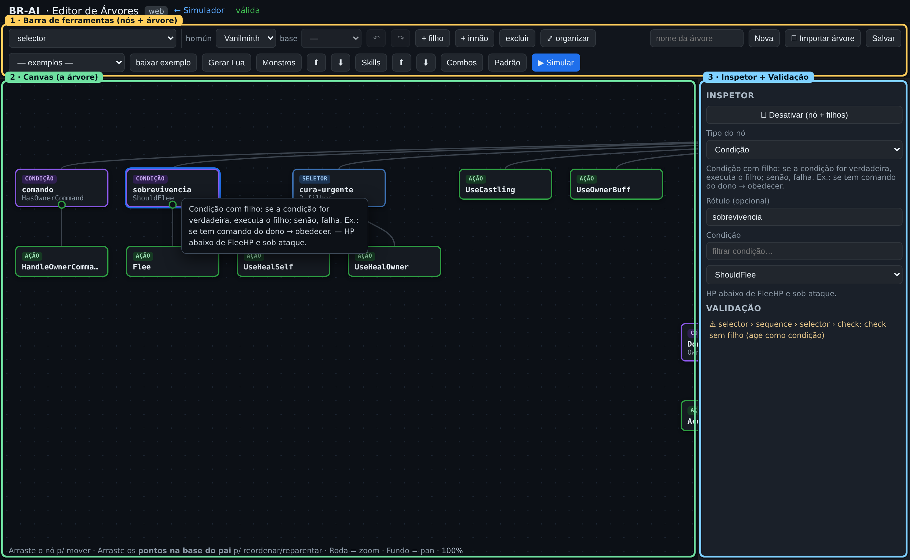
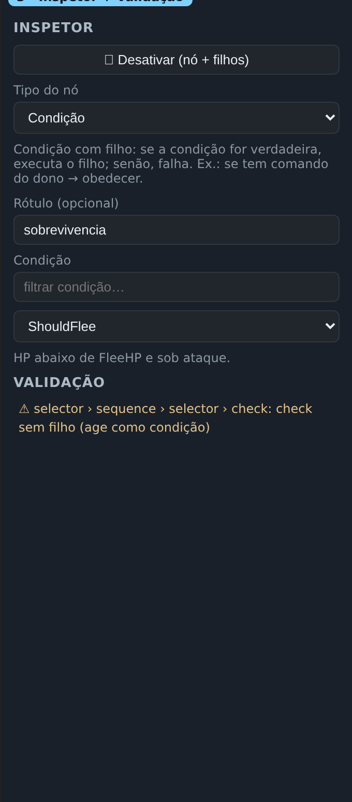
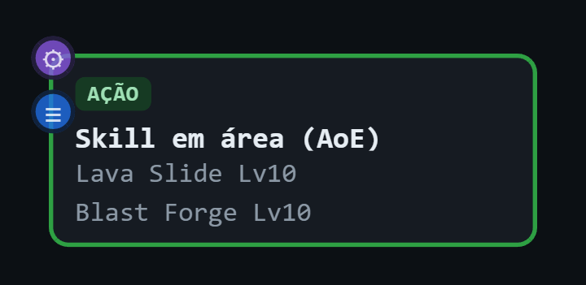
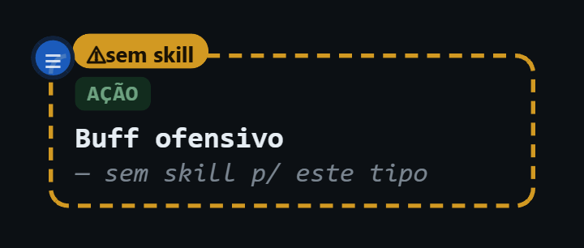
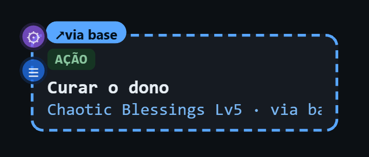
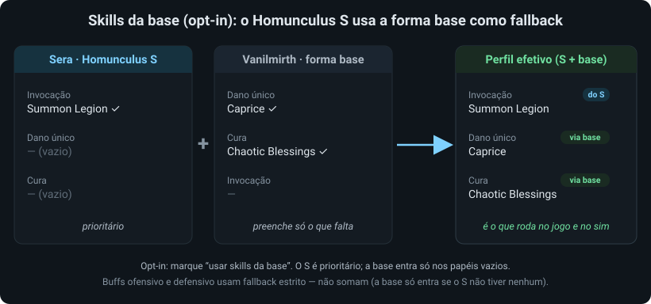
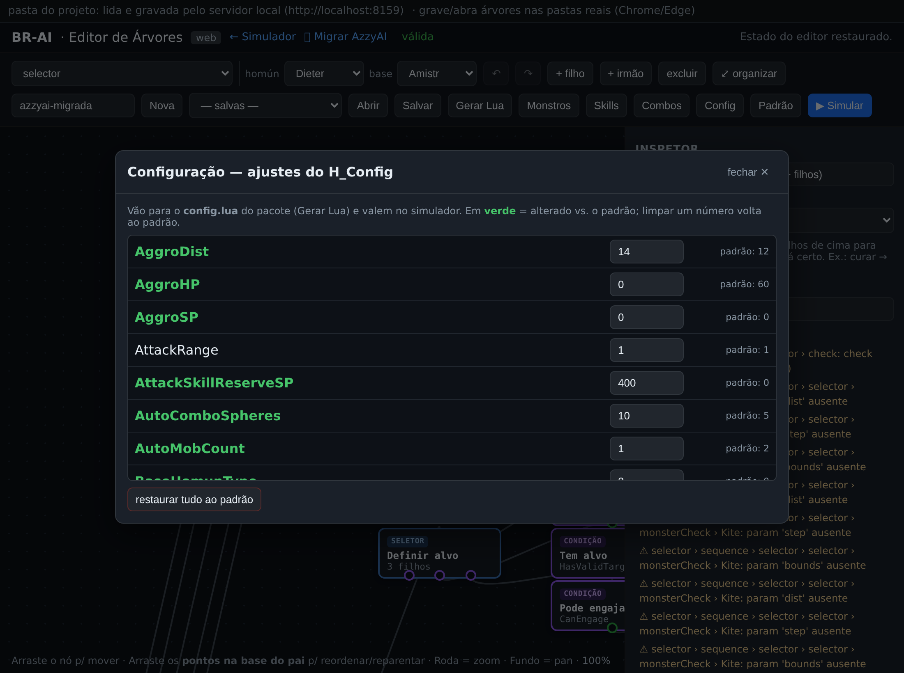
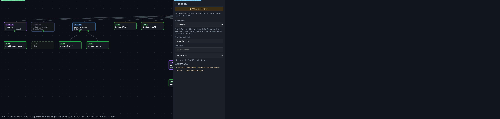

Guia do Editor de Árvores
O editor visual deixa você criar, editar e gerar árvores de comportamento como um grafo de arrastar e soltar — sem escrever Lua à mão. A paleta de nós e a validação vêm dos comportamentos reais do motor, então você nunca monta uma árvore que o jogo não saberia executar.
A tela
A área central é o canvas (o grafo), onde cada nó é um retângulo ligado aos filhos por linhas. À direita fica o inspetor, que mostra as propriedades do nó selecionado e, abaixo, a validação. No topo fica a barra de ferramentas, com os botões de edição de nó e de árvore.

Manipular nós no canvas
| Ação | Como fazer |
|---|---|
| Selecionar | Clique no nó. O inspetor passa a mostrar suas propriedades. |
| Mover | Arraste o nó pelo canvas. |
| Reordenar filhos | Arraste os pontos na base do nó pai. A ordem dos filhos é a prioridade num selector (veja Conceitos). |
| Reparentar | Arraste um nó e solte sobre outro nó válido: o destino fica destacado em verde com a etiqueta “novo pai →”. Solte para mover o nó (e sua subárvore) para lá. |
| Zoom | Roda do mouse (de 0,3× a 2,2×). |
| Pan | Arraste o fundo do canvas. |
| Organizar | Botão ⤢ organizar reposiciona tudo automaticamente (auto-layout). |
Um nó só pode virar filho de um destino que aceite filhos: um composite (aceita vários) ou um decorator / condicional que ainda esteja sem filho. Folhas (ação) não podem ser pais — ao passar por cima delas, o destaque não aparece.
Adicionar nós (menu agrupado)
Há três formas de adicionar:
- + filho — adiciona um filho ao nó selecionado.
- + irmão — adiciona um irmão (mesmo pai) do selecionado.
- O seletor de tipo na barra (à esquerda) define qual tipo será criado.
Tanto o seletor da barra quanto o menu “+” e o seletor de tipo do inspetor mostram os tipos agrupados por categoria: Composite, Decorator, Condicional e Folha — para você achar o que quer rápido.
Para remover, selecione o nó e clique excluir (remove o nó e toda a sua subárvore).
Tipos de nó
Cada tipo se comporta de um jeito. A semântica completa, com parâmetros, está na Referência de nós; aqui vai o essencial para montar.
Composites — aceitam vários filhos
- selector — tenta os filhos em ordem; o primeiro que tem sucesso (ou está rodando) vence. É um “OU de prioridade”.
- sequence — executa os filhos em ordem; para no primeiro que falha. É um “E”.
- parallel — tica todos os filhos; o campo policy define se o sucesso exige
all(todos) ouany(ao menos um).
Decorators — um único filho
- inverter — inverte sucesso/falha do filho.
- succeeder — força sucesso (torna o ramo opcional).
- cooldown — após o filho ter sucesso, bloqueia-o por ms milissegundos.
- limiter — deixa o filho ter sucesso no máximo max vezes.
Condicional — “se X, então Y”
- Condição (o nó
check) — avalia uma condição (name+params); se verdadeira, executa o filho e devolve o status dele; se falsa, falha sem executar o filho. Sem filho, age como condição pura. - monsterCheck — executa o filho conforme qual monstro é o alvo atual (é o monstro escolhido ou está no grupo escolhido), com opção de negar. Veja Monstros & skills.
O nó condicional Condição serve tanto para amarrar “se X então Y” (com filho) quanto como condição pura (sem filho). Árvores antigas podem ter uma condição-folha separada; o inspetor a mostra como “Condição (folha)” e você pode trocá-la para Condição num clique — são equivalentes quando não há filho.
Folha — a ação
- Ação (o nó
action) — uma ação do registry (ex.:AttackTarget,ChaseTarget,UseSkill). Temnamee, conforme a ação,params.
Inspetor e parâmetros
Ao selecionar um nó, o inspetor mostra:
- Tipo do nó — um seletor (agrupado por categoria) para trocar o tipo do nó.
- Rótulo — texto opcional exibido no canvas e no painel do simulador (ajuda a ler a árvore).
- Campos específicos do tipo: policy (parallel), ms (cooldown), max/key (limiter), name (Condição/Ação) e os params da condição/ação escolhida.
Tudo é editado ao vivo: digitar um valor já atualiza a árvore.

Seletor de skills e contexto
As ações de skill (UseSkill, UseSkillBuff) ganham um seletor de skills por categoria no inspetor, em vez de pedir um número cru. As categorias são dano alvo único, dano em área, buff, cura, especial e passiva. O catálogo é montado a partir do contexto atual (tipo de homúnculo e, para Homunculus S, o tipo base), então você só vê skills que aquele homúnculo realmente possui. Para cada skill o inspetor mostra alcance, SP, tempos de cast, recarga e duração; ao escolher um nível, mostra o efeito daquele nível (dano, cura, status) com dados Renewal.
No alto da barra ficam os seletores de homúnculo e base. Eles definem qual catálogo de skills aparece e são compartilhados com o simulador, então ▶ Simular já abre o simulador no tipo certo. O seletor de base só fica ativo para os tipos Homunculus S. Ao lado da base há a opção usar skills da base: quando ligada, o Homunculus S usa as skills da forma base como fallback — o S tem prioridade, e a base só entra num papel que o S não tem. Ex.: Sera base Vanilmirth — a Sera não tem cura, então usa o Chaotic Blessings do Vanilmirth. É opt-in (vem desligada) e vale para o pacote gerado e o simulador. Nós que dependem da base aparecem com o destaque “via base”.
Cada skill da lista de um papel pode ter uma condição opcional: usar só se [TIVER / NÃO TIVER] a skill X.
Ex.: deixe o Dieter usar Lava Slide enquanto NÃO tiver Blast Forge — ao aprender a Blast Forge (prioridade maior), ele troca.
Existe também a percepção “Possui a skill” no combobox de condições, p/ usar isso direto na árvore (negue com inverter).
No jogo, “possui a skill” é resolvido pelo cliente; no simulador, use o campo lvl do homúnculo (ao lado de homún/base) p/ decidir quais skills ele já aprendeu — isso é só do simulador, não vai para a IA gerada.
Atalhos de configuração nos nós
Para não precisar caçar a configuração certa nos modais, os nós de skill e o monsterCheck trazem atalhos que abrem a tela certa já pré-selecionada. Eles aparecem em dois lugares:
- No próprio nó (canto superior esquerdo, sempre visíveis): nos nós de skill, um ⚙ abre Skills por homúnculo e, logo abaixo, um ≡ abre os Parâmetros daquele papel; no
monsterCheck, um ⚙ abre o gerenciador de Monstros no monstro/grupo do nó. - No inspetor: os mesmos atalhos como links (“Configurar skills…”, “⚙ Parâmetros desta skill…”, “Gerenciar monstros…”).
A pré-seleção segue o contexto: o atalho de skills abre no homúnculo selecionado e rola até o papel daquele nó (destacado). Quando a opção usar skills da base está ligada e o papel vem da base, o atalho abre direto no homúnculo base — porque é lá que aquela skill se configura. O atalho do monsterCheck abre já no monstro/grupo referenciado. Os parâmetros são por papel (globais), então o atalho de parâmetros abre na aba do papel.
Se nem o homúnculo selecionado nem a base têm aquele tipo de skill, o atalho de skills do nó desaparece (não há o que configurar); o de parâmetros continua. Skills exclusivas da forma base (Castling do Amistr, Chaotic Blessings do Vanilmirth…) se configuram na tela do homúnculo base.

Como o nó se destaca por homúnculo
O mesmo nó de skill muda de aparência conforme o homúnculo do contexto tem (ou não) aquela skill:
- Normal — o homúnculo tem a skill do papel; o rótulo mostra as skills efetivas (nome + nível).
- ⚠ “sem skill p/ este tipo” (âmbar) — o homúnculo selecionado não tem skill daquele papel e a base também não (ou a base está desligada). O nó fica realçado em âmbar para você notar que ele não faria nada naquele homúnculo.
- ↗ “via base (Nome)” — o homúnculo não tem o papel, mas a base tem e usar skills da base está ligada; o nó usa a skill da base (ex.: Sera usando o Chaotic Blessings do Vanilmirth).


É um realce só visual do editor (e espelhado no simulador): ajuda a enxergar, ao trocar de homúnculo no contexto, quais ramos da árvore aquele tipo realmente executa.

Ajustes (painel Config)
O botão Config na barra abre os ajustes do H_Config daquela árvore: HP de agressão (AggroHP), cura do dono (HealOwnerHP), nº de alvos p/ AoE (AutoMobCount), reserva de SP, esferas p/ combo (AutoComboSpheres), kite global (KiteMonsters/ForceKite, distância em KiteBounds), ataque dançante (UseDanceAttack) a trava de estilo da Eleanor (EleanorDoNotSwitchMode), resgate do dono (RescueOwnerLowHP), mira oportunista (OpportunisticTargeting) e só skill (UseSkillOnly), perambular ocioso (UseIdleWalk), movimento sticky (MoveSticky) e AoE (AutoMobMode/AoEFixedLevel), e por aí vai. Cada knob mostra o valor atual e o padrão ao lado; em verde ficam os que você (ou a migração da AzzyAI) alterou. Limpar um número volta ao padrão; restaurar tudo ao padrão zera os overrides.

H_Config aparecem em verde (alterados vs. o padrão).Ao Gerar Lua, os ajustes entram no config.lua do pacote (que o AI.lua aplica sobre os padrões). Ao ▶ Simular, o simulador também os aplica — então a prévia reflete os seus knobs. Quem vem da migração da AzzyAI já chega com o painel preenchido.
Desativar nós
Você pode desativar qualquer nó para experimentar a árvore sem aquele ramo — sem precisar excluí-lo e recriá-lo. Selecione o nó e clique em ⏸ Desativar (nó + filhos) no inspetor, ou aperte a tecla D.
- Desativar é recursivo: o nó e todos os filhos ficam desativados. Reativar (o mesmo botão / D) religa o nó e os filhos.
- No canvas, os nós desativados continuam visíveis, porém em cinza, para você lembrar que estão lá.
- Um nó desativado não é executado: a árvore o trata como se não existisse.

Ao clicar em Gerar Lua, os nós desativados não vão para os arquivos finais — o pacote da IA fica enxuto, só com o que está ativo. E o simulador também os esconde, espelhando exatamente a árvore que rodaria no jogo. No editor eles continuam ali (em cinza), prontos para você reativar quando quiser.
Validação
O editor valida a árvore continuamente e mostra a contagem de problemas no inspetor. Os tipos de aviso/erro:
- Composite sem filhos (aviso).
- Decorator sem filho (erro).
- cooldown com
msinválido (erro). - limiter com
maxinválido (erro). - Condição/Ação com
nameinexistente no registry (erro). - params obrigatórios ausentes (aviso).
Isso barra a maior parte das árvores quebradas antes de chegarem ao jogo. O ▶ Simular recusa se houver erros — corrija-os primeiro.
Salvar, abrir e importar
Na versão estática, salvar baixa um arquivo e abrir/importar envia um arquivo — seus dados não ficam guardados no navegador. Os botões de árvore:
| Botão | O que faz |
|---|---|
| Nova | Começa uma árvore vazia (só o nó raiz). Dê um nome no campo ao lado. |
| Padrão | Carrega a árvore padrão embutida — um ótimo ponto de partida que já funciona. |
| 📤 Importar árvore | Envia um .json de árvore do seu computador (validado). |
| Salvar | Baixa a árvore atual como .json. |
| — carregar exemplo — | Selecione uma árvore de exemplo no seletor e ela é carregada na hora no editor. |
| baixar exemplo | Baixa o arquivo .json do exemplo selecionado, caso queira guardá-lo. |
| ▶ Simular | Envia a árvore atual ao simulador e abre o simulador para testá-la. |
Detalhes do modelo carregar/salvar e dos cadastros que ficam no navegador (monstros/skills): Primeiros passos.
Gerar o pacote Lua (para o jogo)
Gerar Lua monta um pacote de instalação auto-suficiente da IA e o baixa como um .zip. Dentro dele vão:
AI.lua— o ponto de entrada (defineAI(myid)).brai/lua/**— todo o runtime da IA, já com os arquivos gerados embutidos: a sua árvore, o tipo/base do homúnculo, o catálogo de monstros/grupos, a escolha de skills e os ajustes (config.lua, do painel Config).LEIA-ME.txt— instruções de instalação.
O pacote é self-contained: não depende deste site nem de nada instalado — basta copiá-lo para o cliente.
Instalar no RO
- Extraia o
.zipdentro de<pasta do RO>/AI/USER_AI/, ficando<RO>/AI/USER_AI/AI.luae<RO>/AI/USER_AI/brai/lua/.... - No jogo, ative a IA customizada do homúnculo com /hoai (digite de novo para desligar).
O AI.lua usa BRAI_BASE = "./AI/USER_AI/brai/lua" (relativo à pasta do RO). Se a sua instalação usar outro caminho, edite a primeira linha útil do AI.lua.
Fluxo recomendado
- Padrão (ou Importar uma árvore) para começar de algo que funciona.
- Ajuste a árvore: adicione ramos, troque skills, reordene prioridades, desative o que quiser ignorar.
- ▶ Simular e teste num cenário (veja o Guia do Simulador).
- Itere até o comportamento ficar correto; Salvar para guardar o arquivo.
- Gerar Lua e leve o pacote para o cliente do RO.